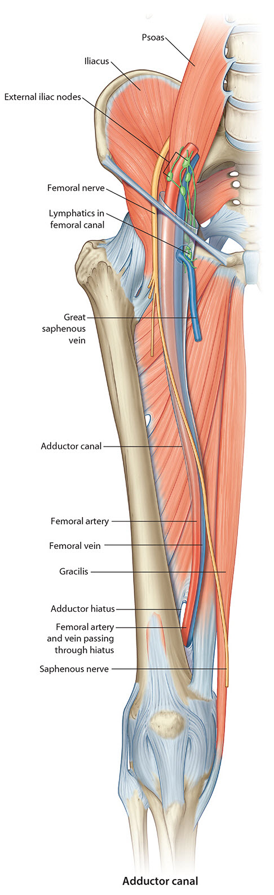
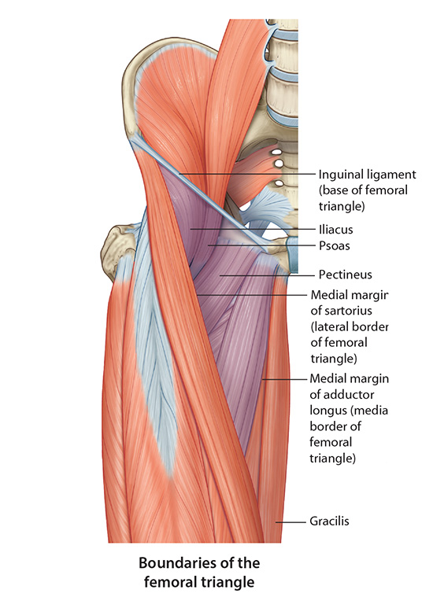

Lab 5 - Module 2 - Hip and Anterior Thigh - Muscles, Nerves and Vessels: Page 6 of 8
×

The Femoral Triangle
|  |
| Tap on image to enlarge |
|  |
| Tap on image to enlarge |
| The inguinal canal is bordered by the the adductor longus medially, the sartorius laterally and the inguinal ligament superiorly. The floor of the triangle is the Pectineus muscle. |
What structures are located in this triangle? |
|
|
Femoral nerve, artery,vein and lymphatic drainage. (NAVL- Lateral to medial description of the contents of the femoral triangle) |
|
Why is this triangle important clinically? |
|
|
|
|
| Add the Inguinal Lymph Nodes. |
| Add the Pelvic Lymph Nodes. |
Why is the connection between the femoral and pelvic lymph nodes so important? |
|
|
Infections or tumors distal to the pelvis will often manifest as enlarged lymph nodes in the inguinal triangle. |
|